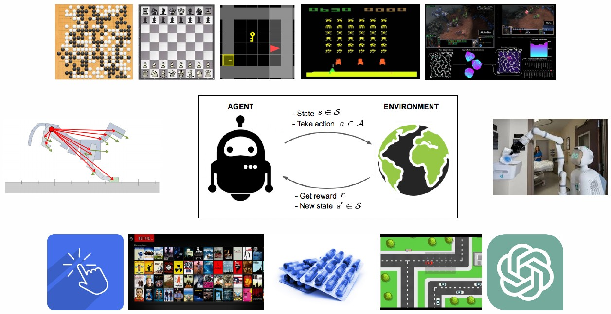
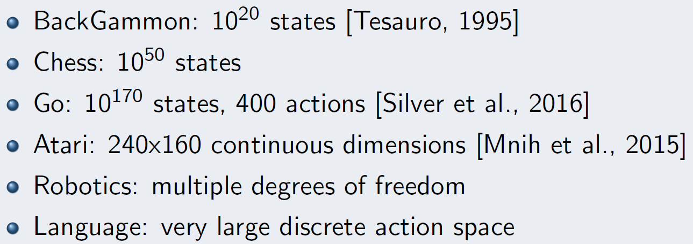
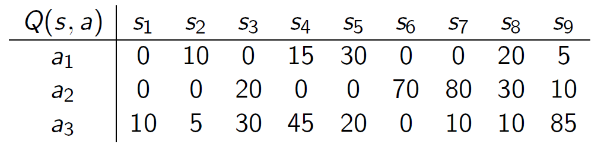
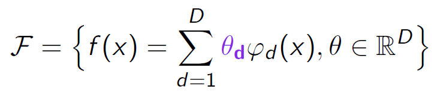
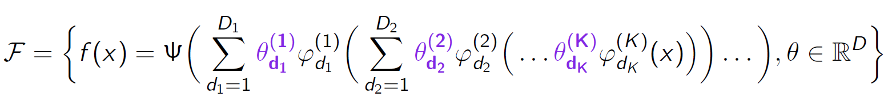

Introduction: MDP and Representation

Odalric-Ambrym Maillard
HORIBA
July 09, 2025

Roadmap
- MDPs in
large spaces - Tabular vs Parametric
- Types of Approximate RL algorithms
- Linear representations
- Non-linear representations
Markov Decision Process recap

Markov Decision Process recap
- \(\cS\) states, \(\cA\) actions
- \(R: \cS\times\cA \to \cP(\Real)\)
Reward function - \(P: \cS\times\cA \to \cP(\cS)\)
Transition function - \(\pi: \cS\to\cP(\cA)\)
Policy - \(V_\pi: s \mapsto \Esp\bigg[\sum\limits_{t=0}^\infty \gamma^t r(s_t,a_t)|s_0=s\bigg]\)
Value Function - \(Q_\pi: \cS\times\cA \to \Real\)
Quality Function
Challenge: How to
Large state space

Large state space


Tabular vs Parameter storage

Storage: \(S\times A\) parameter values.
\(Q(s,a) = \theta_1 \phi_1(s,a) + \theta_2 \phi_2(s,a)+ \dots + \theta_d \phi_d(s,a)\)
Storage: \(d\) parameter values.
Example of feature:
\(\phi_1(s,a) = 1\) if (\(s<1.2\) and \(a<0.5\)) else 0
\(\phi_1(s,a) = \cos(2\pi s/5)\cos(2\pi a/3)\)
Types of RL algorithms
-
Critic algorithms: Focus onValue/Quality function V/Q representation (Q-learning, Sarsa, TD(\(\lambda\)), etc.) -
Actor algorithms: Focus onPolicy function \pi representation (PPO, TRPO, etc) -
Actor-Critic algorithms: Useboth representarion (SAC, A3C, etc)
Linear representations
Representation with

Linear regression, Wavelet regression, Kernel regression, etc.
Minimize loss function:
\( \mathcal{L}(\theta) = \sum\limits_{i=1}^n (y_i - \theta^\top \phi(x_i))^2 + \lambda \|\theta\|^2_2\)
Find \(\theta\) such that \(\nabla \mathcal{L}(\theta)=0\)
Cons: Requires \(O(D^3)\) computations to minimize the loss.
Non-Linear representations
Representation with

Linear layers combined non-linear units: Neural networks
Large number \( D= \sum\limits_{k=1}^KD_k\) of parameters but structured.
Pros: More expressive. Presence of automatic differenciation tools.
Autograd
Deep Learning revolution = Automated differenciation tools.
Two challenges
Value and Quality functions are
We don't directly observe \(V(s)\).
How to tacke regression objective \((V(s)- \theta^\top \phi(s))^2\) ?
That
May not hold. Move to Non-linear, or Huge Linear space?